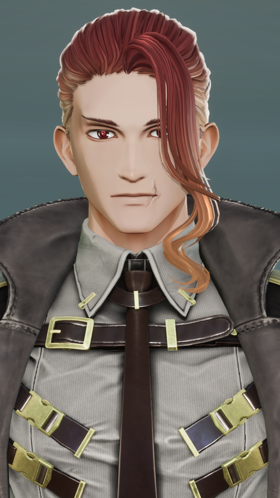
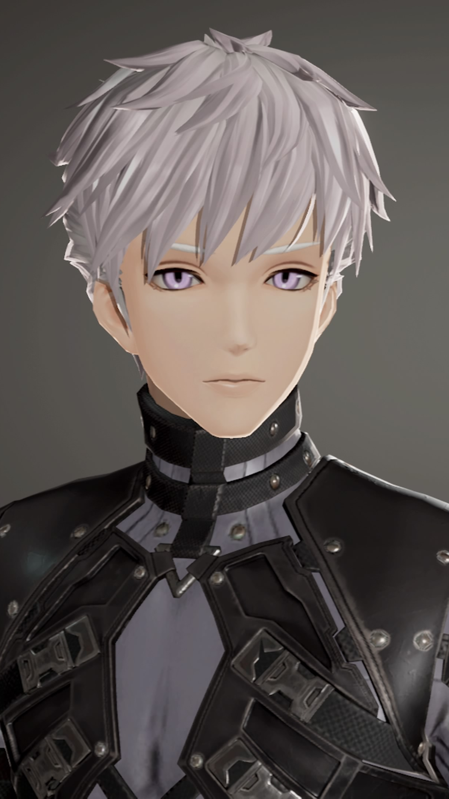
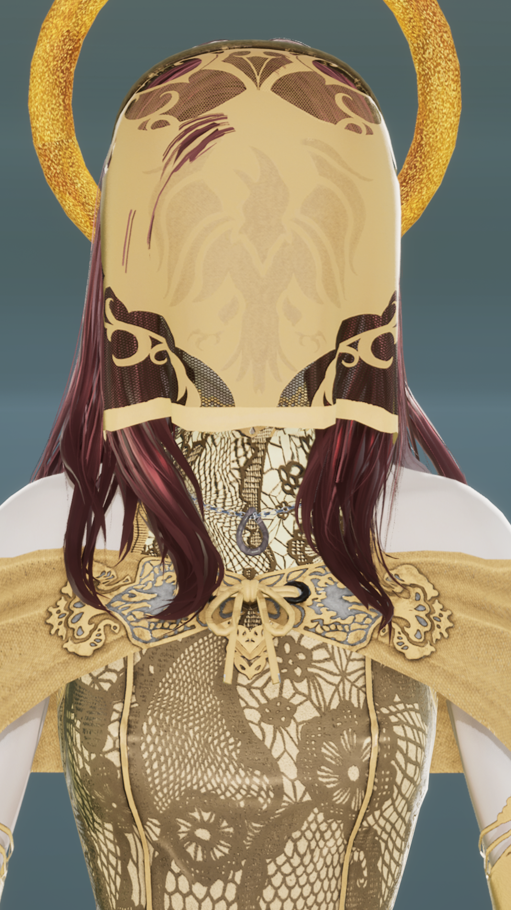

01 Ursula
| 名前 | ウルスラ |
|---|---|
| 年齢 | 不明 |
| 性別 | 男性 |
| 身長 | 178cm |
| 誕生日 | 不明 |
| 出身 | ブリテン |
| 好きなもの | わからない |
| 嫌いなもの | わからない |

PROFILE
『アーサー王と終焉の庭』の主人公。完璧な王となるために男でも女でもない存在として育てられた青年。
公平な立場を保つためあらゆる選択は彼から遠ざけられたが、そのせいで彼は”選ぶ”ということを知らずに大人になり、ブリテンの王になった。
カムランの丘でモードレッドと相打ちし死亡したが、マーリンの打ち建てたアヴァロンによって死から切り離され、以降目覚めることなくアヴァロンの花園で眠り続けている。
『アーサー王と終焉の庭』中では珍しい黒髪の持ち主だが、これは母親譲りらしい。
DETAIL
最初から最後まで何も知らずに物語の中心に存在し続けた、唯一一切の”ほころび”を持たなかった人物。
アヴァロンで目覚めることなく眠り続けているのは、彼には”ほころび”がないせいで「唯一生き残ってアヴァロンを打ち立てる」以外の可能性が無いためである、というのがマーリンの見解である。
実際、彼以外の騎士が全員眠っている（筋書き通りになっている）際には、目を覚ましてマーリンと言葉を交わすこともあるようだ。
02 Pearlsiva
| 名前 | パーシヴァル |
|---|---|
| 年齢 | 不明 |
| 性別 | 男性 |
| 身長 | 不明 |
| 誕生日 | 不明 |
| 出身 | 不明 |
| 好きなもの | 不明 |
| 嫌いなもの | 不明 |

PROFILE
円卓の騎士の一人であるが、作中では冒頭「聖杯探索に向かったギャラハッドを追う」という情報でのみ登場する。
DETAIL
姿を消したギャラハッドを追って聖杯にたどり着き、世界の真実を知った一人。
彼はギャラハッドの期待通り、真実を知らせるために王都へと帰還するが―――
本来名前の綴りは「Perceval」が正しいが『アーサー王と終焉の庭』では”真珠色のシヴァ”を意味する「Pearlsiva」が使われている。
03 Key
| 名前 | ケイ |
|---|---|
| 年齢 | 不明 |
| 性別 | 男性 |
| 身長 | 187cm |
| 誕生日 | 12月のいつか |
| 出身 | ブリテン |
| 好きなもの | 遊泳、稽古 |
| 嫌いなもの | クソ魔術師 |

PROFILE
ウルスラの右腕的存在であり、円卓の騎士の一人。『アーサー王と終焉の庭』ではユーサーの実の息子、つまりウルスラの実兄として描かれている。
本来であれば次の王としてブリテンを納めるはずだったが、当人がこれを拒否。酷い罵詈雑言で父であるユーサーを捲し立てたため「こんな者に国を任せられない」とユーサーが直々に王権引継ぎを撤廃した。
しかし彼は後になって「自分のせいでウルスラがこの運命をたどることになった」とかなり後悔したらしく、ウルスラが王に即位してからは全力で彼をサポートしたが、彼もまたウルスラの”王”たる姿にもどかしさを感じていた。
ランスロットを追いにフランスへ向かっていたウルスラが無事城へ帰還できるようにモードレッド軍の足止めを行ったが、正直ウルスラに対して同じ感情を抱いているモードレッドを殺す気はさらさらなかった。
しかしモードレッドは「王をやめさせるためにウルスラを殺す」と無理やり自分と戦う理由を作らせ戦闘。ウルスラが無事に城へ帰還した知らせを聞いた後モードレッドに討たれ死亡した。
瞳に「星の力」というものを宿しているらしいが、どのような力なのかは今のところ不明。
アヴァロンに入ったことは確認されているが、モードレッドと同じく行方不明となっている。
DETAIL
───KUatGoDには「聖剣エクスカリバー」が登場しない。
『正史としての円卓』の存在を知ったアンブローズは、そこに登場する聖剣エクスカリバーについて、様々な考察をしていた。
エクスカリバーは王たる象徴であり、最強の象徴でもある。この"物語"との関わりは強く、必ずどこかに存在するはずだ。
そうしてエクスカリバーについて考えているうちに、魔術師は一つの仮設に辿り着いた。
ケイの目に宿っている「星の力」が、エクスカリバーに関連する力なのではないかということだ。
「星の力」について、"物語"の中で触れられたのはほんの一度だけである。しかもそれは、ただ「そういうものがある」というだけで、どんな力なのかは一切紹介されなかった。
アンブローズは重い腰を上げ、『正史としての円卓』の王であるアーサーにエクスカリバーについて訪ねた。
彼の口からは様々な思い出が語られた。しかし彼の言うところには「エクスカリバーは確かに優れた剣だが、魔法の力を得ているわけではない」ということだった。
しかし彼は二言目に「その代わり、エクスカリバーの鞘には特別な力があった」と発言した。
エクスカリバーの鞘には、持つものに不死を与える魔法がかかっていた。しかし『正史としての円卓』では、その鞘はモルガンによって失われ、結果的にアーサーは不死ではなくなった。
アンブローズは考えた。ケイの目に宿っている「星の力」は、その不死の力のことを指していたのではないか、と。
剣と鞘は2つで1つだ。ここにおいて剣は王を示すものであり、鞘はそれを保護するものだ。
ウルスラの"完璧な御身"こそが生けるエクスカリバーであり、それを一番近くで見守るケイの目に「星の力」が宿っていたとしたら───？
"全ての命が終わりを迎えたら"というテーマを持つKUatGoDは、そうは言っておきながらも、実際ウルスラだけが生き残りアヴァロンを打ち立てる予定になっていた。エクスカリバーの鞘と同等の力を持つケイの目が一番近くで彼を見守り、その身を守護するとしていたからだ。
しかしケイはモードレッドによって討たれた。この「星の力」は、本人には効果が発揮されない。そして鞘が失われればアーサーが不死でなくなるのと同じように、ケイが死ねばウルスラも不死ではなくなった。
あとはもう、全てアンブローズの知るところである。
04 Lancelot
| 名前 | ランスロット |
|---|---|
| 年齢 | 不明 |
| 性別 | 男性 |
| 身長 | 190cm |
| 誕生日 | 3月15日 |
| 出身 | ベンウィック |
| 好きなもの | 静かな場所 |
| 嫌いなもの | 不明 |

PROFILE
円卓の騎士の一人。
彼がまだ幼いころ、父親のバン王が領地を失った際に母親のエレインと共に国を逃れ、その途中でニミュエの住まう湖にたどり着いた。
エレインはニミュエに彼を預け、ベンウィックに戻りバン王と共に戻ると言ったが、ついぞ二人が戻ることはなかった。
その後両親の顔を知ることなくニミュエに育てられた彼は、旅の途中剣技の才能を買われ円卓の騎士となる。
騎士道と忠義を重んじる素晴らしい騎士であったが、荷車に乗ったり昼寝が好きだったりマイペースな部分も多々あった。
ウルスラには、その姿は美しい人間の姿として映った。人の心を失いつつあった王に、彼は”憧れ”という感情を芽生えさせた。
だから、ウルスラは彼がギネヴィアと不義の恋に落ちていると知っても、さほど驚かなかった。
彼のような人間を愛するギネヴィアの気持ちが、ほんの少しだけわかったような気がしたから。
彼が冷たい水底に消えていったことは、太陽の騎士のみぞ知る。
現在はとある世界で、多くの想いや願いを背負いながらも、再び冒険を続けているようだ。
DETAIL
ギネヴィアを火刑から救い出し、逃げた先の湖で入水自殺に及んだ。
「ランスロットが自殺する」という展開は決められていた展開だが、彼が”もしも”を願ったことによりギネヴィアの目論見を後押ししたのは、思わぬ誤算だっただろう。
05 Gawain
| 名前 | ガウェイン |
|---|---|
| 年齢 | 不明 |
| 性別 | 男性 |
| 身長 | 180cm |
| 誕生日 | 8月30日 |
| 出身 | オークニー |
| 好きなもの | 晴れ、林檎、信念のある者 |
| 嫌いなもの | 雨 |

PROFILE
円卓の騎士の一人で、同じく円卓の騎士であるガレスやガヘリス、アグラヴェインの兄。モードレッドは種違いの末弟。
ランスロットと特に仲が良く、ともに剣の腕を競い合う良き友であったが、弟妹達を殺されたことによりその絆は揺らぐ。
しかし私情を挟んだことで国の守りを弱らせたと責任を感じており、以降ウルスラに対して過剰なまでの忠誠を誓っている。
カムランの丘での戦いにランスロットを呼び出すため、また彼との絆を修復するためひとり先んじてフランスに向かったが、その先でガウェインを待っていたのは物言わぬ湖だけであった。
左頭部の痕はランスロットとの戦いでついたものをさらに上からモードレッドに叩かれたもので、彼の死因でもある。
贖罪の意も込めて、右目は転生したランスロットと共にある。
DETAIL
ウルスラを王へと押し上げたことや、ランスロットに酷な運命を辿らせたことを、非常に後悔している。
マーリンがウルスラの役目を引き継ぎアヴァロンを打ち立てて以降、皆にとって良い結果となったことを喜んではいるが、責任感のある彼が己の過去の過ちを忘れることはないだろう。
06 Gaherith
| 名前 | ガヘリス |
|---|---|
| 年齢 | 不明 |
| 性別 | 男性 |
| 身長 | 165cm |
| 誕生日 | 8月1日 |
| 出身 | オークニー |
| 好きなもの | 槍試合、騎士 |
| 嫌いなもの | 寝起きのガレス |

PROFILE
円卓の騎士の一人で、兄にガウェインとアグラヴェイン、義弟にモードレッドを持つ。ガレスは双子の妹。
見た目も嗜好もガレスによく似ており、使っているのもガレスと同じ槍だが、ガレスのように明るく快活な性格ではなく、どちらかというと影があり根暗な印象を受ける。
円卓の騎士となる前はガウェインの従者だった。
円卓の騎士に名を連ねてからはガウェインよりもガレスと共に行動することが増え、彼女に対してはそこそこ口が悪いことが知られている。
死の際もガレスと一緒だったが、アヴァロンでランスロット転生に意気込む妹の姿を見て「あいつは休む気がないのか」と飽きれを見せていた。
DETAIL
作中で具体的に触れられることはないが、ガヘリスとガレスは「表裏一体」の象徴として描かれている。
そのため「本当は終わらない”終わる物語”」であるKUatGoDではそれなりに活躍場面が多く、またガレスとガヘリスの死が均衡の崩壊を示し、物語の起承転結の転の部分に当たるとされている。
07 Gareth
| 名前 | ガレス |
|---|---|
| 年齢 | 不明 |
| 性別 | 女性 |
| 身長 | 153cm |
| 誕生日 | 8月1日 |
| 出身 | オークニー |
| 好きなもの | 槍試合、騎士 |
| 嫌いなもの | 汚れた水回り |

PROFILE
円卓の騎士の一人。兄にガウェインとアグラヴェイン、義弟にモードレッドを持つ。ガヘリスは双子の兄。
ランスロットによって騎士に叙任され、その槍を王と仲間たちのために大いに振るった。
また円卓の騎士となる前に一年間、ケイが管理する城の厨房で下働きをさせられた。その際に「ボーマン（美しい白い手）」のあだ名を得ている。
ギネヴィア火刑の場に現れたランスロットと無防備な状態で対話を試み、激高していた彼によってガヘリスと共に殺害された。
しかしランスロットが自分を殺したくて殺したわけでもなければ、王に歯向かいたくて歯向かったわけでもないことはよく理解しており、それ故彼が新しい世界に転生するための手助けは惜しまなかった。
彼女もまた兄たちやランスロット、円卓の騎士達やウルスラを、ただ心から愛しているだけだったのだ。
DETAIL
彼女がランスロットの転生を願ったのは、勿論彼女自身の意思であり、本筋で想定されていたものではない。
彼らが抱く感情もまた、”ほころび”の一つであったと言わざるを得ないだろう。本当に完ぺきな物語というのは存在しない。
母親であるモルガンのことはガヘリス同様好意的には思っておらず、どちらかというとギネヴィアに対して姉のような感情を持っていたとか。
08 Angrevein
| 名前 | アグラヴェイン |
|---|---|
| 年齢 | 不明 |
| 性別 | 男性 |
| 身長 | 184cm |
| 誕生日 | 11月11日 |
| 出身 | オークニー |
| 好きなもの | 静かな場所 |
| 嫌いなもの | ランスロット |

PROFILE
円卓の騎士の一人で、兄にガウェイン、弟妹にガレスとガヘリス、義弟にモードレッドを持つ。
正義心と忠誠心が強く、融通が利かない部分もある。
ランスロットとギネヴィアの不倫を明るみにしようと一番最初に動いたのも彼だった。アグラヴェインはこのことを明るみにすれば、ウルスラが自分の意志で動いて国を持ってくれるのではないかと期待していた。
しかし実際は咎めるはおろか、二人の関係をすでに知っていたというのだ。
王はもう人ではない。王は王の化身となってしまった。王に”道徳”は図れない。ならば王の手足たる円卓の騎士が、図れる騎士が図らなければ。
そうして彼は自軍の騎士数十人を率い、ランスロットへギネヴィア火刑の知らせを送り、その場で発生した戦いに敗れ死亡した。
はたして彼は死の間際、王と国を思ったのだろうか。それとも愛憎を抱いたのだろうか。
DETAIL
モードレッド同じく、世界の真実を知らずに筋書き通りに動いた騎士。
本来名前の綴りは「Agravain」が正しいが『アーサー王と終焉の庭』では”怒れる血脈”を意味する「Angravein」が使われている。
09 Tristan
| 名前 | トリスタン |
|---|---|
| 年齢 | 不明 |
| 性別 | 男性 |
| 身長 | 178cm |
| 誕生日 | 不明 |
| 出身 | リオネス（コーンウォール） |
| 好きなもの | 音楽と度 |
| 嫌いなもの | 特にない |

PROFILE
円卓の騎士の一人。
アイルランドの王族モルオルトとの決闘の際に受けた毒傷を治してもらう際に「美しいイゾルデ」と仲を深めたが、その後「美しいイゾルデ」は引き取り手である叔父のマルク王と結婚し、マルク王との確執に苦しんだ彼はコーンウォールを出、その過程で円卓の騎士として活躍する。
しかし旅好きと放浪癖が相まってか、円卓の席はおろかブリテンにいることは極めて少なく、円卓の騎士となった後も様々な場所へ足を伸ばし旅をつづけた。
その旅の途中で「白い手のイゾルデ」と出会う。
作中では数少ない、”具体的に最期が書かれていない”人物。
「白い手のイゾルデ」と出会った後のことは全く触れられていないため、そのまま生き延びたと解釈されている。
DETAIL
「白い手のイゾルデ」によって世界の真実を知った一人。
「白い手のイゾルデ」は、ディンドランと同じく聖杯の乙女であり、自らの意思で親しくなったトリスタンに対して啓示の内容を知らせていた。
タイミングからして、ギネヴィア火刑前に円卓に戻りアグラヴェインやモードレッドの行動を止めることもできたが、「私の円卓の騎士としての役目は、共に肩を並べた騎士たちの道行きを見守ること」と、止める意思を見せることはなかった。
10 Bedivere
| 名前 | ベディヴィエール |
|---|---|
| 年齢 | 不明 |
| 性別 | 男性 |
| 身長 | 175cm |
| 誕生日 | 不明 |
| 出身 | 不明 |
| 好きなもの | ウルスラ、円卓の騎士たち |
| 嫌いなもの | 無益な争い |

PROFILE
ウルスラの側近でもある円卓の騎士の一人。
ウルスラは本来モードレッドとの戦いで生き残り、その手でアヴァロンを建てる”手筈”になっていたが、争いの再発を恐れたべディヴィエールがウルスラを殺害したのち自らも自害したことで、『アーサー王と終焉の庭』は文字通り『すべての命が終わりを迎え』る結末を迎えた。
その際のウルスラの返り血が右頬に痕となって残っている。
マーリンによってアヴァロンに入ってからは、眠り続けているウルスラの側で彼が目覚める日を待っている。
彼も珍しい黒髪だが、経緯は不明。物語中にはウルスラの影武者として活躍するエピソードも見られる。
DETAIL
本筋では生死不明になっていたが、物語を終わらせるために動いていたギネヴィアの根回しによって明確な生存ルートを確保された。
本来であれば実は生き残っていた展開になっており、ウルスラと共にアヴァロンを打ち建て、世界を再構築するための支えとなる手はずだった。
しかし物語の外、ギャラハッドとディンドランの必死の接触によって「このままではウルスラが永遠の王になり果てる」「世界は正常な終わりを迎えることはない」ということを知らされ、ウルスラの本格的な自我の喪失や争いの再発を危惧する。
そこでようやくギネヴィアが自分に対して最後まで生き残るよう動いていたことを理解した彼は、王を終わらせるべきは己であると確信し、カムランの丘でモードレッドを斃したウルスラをそのまま殺害、自らも自害するという道を辿った。
マーリンの予想外の行動に最初は苛立ったが、世界の永遠を約束するのではなく、次なる夜明けに導くようなやり方に、最終的には折れている。
11 Mordred
| 名前 | モードレッド |
|---|---|
| 年齢 | 不明 |
| 性別 | 男性 |
| 身長 | 169cm |
| 誕生日 | 5月1日 |
| 出身 | 不明 |
| 好きなもの | 義父上、戦い、剣の手入れ |
| 嫌いなもの | 王 |

PROFILE
円卓の騎士の一人であり、『アーサー王と終焉の庭』を形式上の終末へ導いた反逆の騎士。
母親はモルガンであるが父親はウルスラではないため、作中ではウルスラの養子として描かれている。当然だが顔も似ていない。
完璧な”王”として生きるウルスラに複雑な感情を抱き、ウルスラの人間としての価値を知るため、そして自分を人として見てもらうため混乱に乗じて盾突いた。
ウルスラによって殺されたのち他に同じくアヴァロンに入ったが、「合わせる顔がない」と逃げるようにどこかへ行ってしまった。マーリンも追跡は後回しにしている。
DETAIL
モルガンによって生み出された精霊騎士であり、円卓を崩壊へ導く終焉の騎士。最初から最後まで物語の筋書き通りに動いた、ある意味での忠義の騎士。
しかしその上で、ウルスラに対して「王でなく父であること」を願った子供。ベディヴィエールに最後の手を下すきっかけを与えた。
本来名前の綴りは「Mordred」が正しいが『アーサー王と終焉の庭』では”腐り落ちる赤”を意味する「Moldred」が使われている。
12 Galahad
| 名前 | ギャラハッド |
|---|---|
| 年齢 | 不明 |
| 性別 | 男性 |
| 身長 | 不明 |
| 誕生日 | 不明 |
| 出身 | 不明 |
| 好きなもの | 不明 |
| 嫌いなもの | 不明 |

PROFILE
円卓の騎士の一人。ランスロットの息子であると語られる場面があるが、ランスロットはそれを認識しておらず、母親も不明。
物語が始まるよりも前、聖杯の乙女であるディンドランを連れて聖杯探索に向かっており、作中には一度も登場しない。
”感情を消し去る剣”というものを所持しているらしいが、こちらも詳細は不明。
DETAIL
ニミュエによって生み出された精霊騎士であり、聖杯に選ばれた騎士。
当然ランスロットの息子ではないが、ニミュエに縁があることからそのように記載されているようだ。
ディンドランによって聖杯に導かれ、世界の真実を知った。
ギャラハッドが聖杯にたどり着くことは本筋で決められており、本来であれば聖杯探索から帰還した後に、ウルスラ以外の騎士を殺害するための機構として動く”手筈”になっていた。
”感情を消し去る剣”も、”ほころび”を排除し、物語の筋書きを正しくなぞるために持たされていたもの。
しかし聖杯によって真実を知らされたギャラハッドは、自らが物語の機構として作用することを自らの意思で拒み、”感情を消し去る剣”を放棄して、ディンドランと共に物語の”外”へ向かった。
物語の外、つまりこの物語の作者と同じレイヤーに降り立ったのだ。
聖杯によって物語を観測する力を手に入れたギャラハッドは、パーシヴァルも同様に聖杯にたどり着くことを知り、親友であり良きライバルでもあるパーシヴァルに帳尻合わせを任せることにした。
そもそも、機構である自分が物語から退場すれば、ある程度世界崩壊の運命は捻じれ、結末が変わると思ったのだ。
しかし物語に挿げられた恣意は、ギャラハッドの予想をはるかに上回るものだった―――。
A Guinevere
| 名前 | ギネヴィア |
|---|---|
| 年齢 | 不明 |
| 性別 | 女性 |
| 身長 | 168cm |
| 誕生日 | 7月7日 |
| 出身 | コーンウォール |
| 好きなもの | 花、星、ブリテン |
| 嫌いなもの | 争い |

PROFILE
まだ幼く後ろ盾が必要だった頃のウルスラに嫁いだ形式的な妃。
ウルスラのことは勿論愛していたが、人間として彼と接することができなかった分、ランスロットとの距離が近くなるばかりであった。
しかしギネヴィアはランスロットと恋仲にありながらも、それを悪しとしない…否できないウルスラの自我のなさを危惧していた。
このままでは彼は本当に”王”になり果ててしまう。そんな彼が国を豊かにできるわけがない。
そう思ったギネヴィアは円卓の騎士たちや、宮廷魔術師であり大魔術師であるマーリンに、とある提案を持ちかける──
DETAIL
「マーリン、この世界を終わらせましょう」
「観測者たるあなたが、責任をもって続きを書くのよ」
聖杯の導きなくして、自らの意思で”世界を書き換える”ことを思いついた、驚異の女性。
ギャラハッドやパーシヴァル、トリスタンが真実にたどり着いていたことは知らず、本当に自らの意思のみで聖杯の真実に近いものにたどり着いている。
彼女の行動のせいで、モルガンやニミュエは間違いなく苦労しただろうし、案の定物語は多くの”ほころび”によって書き換わる形となった。 ウルスラの側近であるベディヴィエールが物語の最後まで生き残れるよう加護をもたらしたのも彼女。
ランスロットによって火刑から救出され、その先でランスロットと共に入水自殺したが、これも当然本筋から外れた行動で、本来はランスロットを追ってきたウスルラに殺される予定だった。 想定より早く死したギネヴィアは、ランスロットに後悔という強い”ほころび”を持たせることとなり、結果的にガレスの強い祈りや聖杯の輝きの増加へ影響をもたらした。
B Morgause
| 名前 | モルガン |
|---|---|
| 年齢 | 不明 |
| 性別 | 女性 |
| 身長 | 171cm |
| 誕生日 | 不明 |
| 出身 | コーンウォール |
| 好きなもの | 美しいもの、神秘 |
| 嫌いなもの | 壊れやすいもの |

PROFILE
ウルスラの姉でありオークニー兄弟とモードレッドの母である魔女。
ウルスラを完璧な王に仕立て上げるため様々な策略を練った。
モードレッドをウルスラの養子としてとることを提案したのも、モードレッドを生んだことすらもその策略だったといわれるが、実際どうなのか不明。
モードレッドが最終的にウルスラを王の座から引きずり降ろそうとしたことは、彼女の唯一の計算外だったことであろう。
婚約者であったロット王の仇敵の息子と愛人関係にあり、それを疎ましく思ったガヘリスによって殺されるが、死後も亡霊となってウルスラを取り巻いたという話が残っている。
モルガンという名前は実名ではなく、ロット王が納めていたオークニーという地名からとられたらしく、実名は不明。
DETAIL
物語を完璧なものにするために、聖杯によって挿げられた存在。
『「"全ての命が終わりを迎えたら"というテーマで書かれた、実際は一人が生き残るように出来てる物語」でテーマ通り全ての命を終わらせる』ことを使命としている。
ギャラハッドを追って聖杯にたどり着いたパーシヴァルを王都前で殺したのも彼女。
もしもパーシヴァルがここで殺されていなければ、世界の真実を知った円卓の騎士たちは誰一人死ぬことなく、物語は終わりを知らない”永遠”になっていただろう。
モルガンは物語の機構として生み出されたため”ほころび”をほとんど持たないが、自分の創造物であるはずのモードレッドがウルスラに対して父像を求めるような行動を取ったことは、彼女に僅かな動揺を与えたと言える。
最終的に物語の帳尻を壊したベディヴィエールを止められなかったのも、その影響だったようだ。
元から死んでいれば、もう死ななくて済む。
そうして彼女は、全てが終わることを受け入れた。
C Nimue
| 名前 | ニミュエ |
|---|---|
| 年齢 | 不明 |
| 性別 | 女性 |
| 身長 | 159cm |
| 誕生日 | 不明 |
| 出身 | なし |
| 好きなもの | 不明 |
| 嫌いなもの | 不明 |

PROFILE
エレインからランスロットを預かり養育した湖の乙女。
また、マーリンが湖の乙女に惚れてしまいあらゆる魔法を教えてしまった結果、岩の下に閉じ込められてしまったという話の、その湖の乙女。
概念的な存在であるため彼女に死は存在しない。
DETAIL
モルガンと同じく、物語を正常に保つために挿げられた存在。
モルガンが”終わらせる”方面に修正するのに対して、彼女は”終わらない”方面に修正する。ウルスラが死なないようにするのは主に彼女の役目。
ギャラハッドを生み出し、”感情を消し去る剣”を持たせたのも彼女。
ギャラハッドが物語の外に出たことを察知していたが、それに対して何か策を練ることはしなかった。
ベディヴィエールがウルスラを殺すのを止めなかったのも、ギャラハッドが物語の外へ行くのを止めなかったのも、理由はごく単純に「面白そうだったから」。 マーリンを岩の下に封じ込めたのも「マーリンがどのように動くか観察するため」。
人間の起こす奇跡というものを信じており、故にこの物語がどのような”結末”を辿るのか、それをただ観察している。
元より、マーリンが惚れるような存在だ。予想外を好まないわけがない。
D Dayindragon
| 名前 | ディンドラン |
|---|---|
| 年齢 | 不明 |
| 性別 | 女性 |
| 身長 | 不明 |
| 誕生日 | 不明 |
| 出身 | 不明 |
| 好きなもの | 不明 |
| 嫌いなもの | 不明 |

PROFILE
パーシヴァルの実妹であり、ギャラハッドと共に聖杯探索に向かった聖杯の乙女。
しかしギャラハッド同様作中には登場せず、聖杯の乙女がどのような存在であるかを説明する場面でしか名前が登場しない。
聖杯の乙女は聖杯に祝福された存在で、円卓の騎士に聖杯探索の助けをもたらす存在であるようだ。
DETAIL
聖杯に選ばれ、世界の真実を知る人物。
『アーサー王と終焉の庭』の発端を担ったともいえる存在で、作中では円卓の騎士以外で最も初めに名前が出てくる。
”Dayindragon（或る日の竜）”という名を与えられた彼女は、聖杯から「この世界は作り物である」「全ての命が終わると言ってはいるが、ウルスラだけは生き残るようになっている」「モルガンがそれを壊す係である」などを聞かされる。
彼女は聖杯に選ばれる”手筈”になっている騎士ギャラハッドを引き連れ、聖杯探索を滞りなく終わらせる。
しかしギャラハッドが自らの意思で物語を出ることを選んだため、その先に興味を持ち、共に物語を出ることを選んだ。
実兄であるパーシヴァルがギャラハッドを追って聖杯探索に出ることは”手筈”であるため勿論知っており、知った上で「兄様ならきっとこの真実にたどり着くし、皆に知らせようとする」と強い信頼を持っていた。
ギャラハッドの”ほころび”を面白がった聖杯が、パーシヴァルに対して物語の改変を促したのも、すぐそばで見ていた。
しかしパーシヴァルが王都帰還前にモルガンという機構に殺されたことで、その希望はあっけなく霧散することとなる。
本来名前の綴りは「Dindrane」が正しいが『アーサー王と終焉の庭』では”或る日の竜”を意味する「Dayindragon」が使われている。
E Merlin
| 名前 | マーリン |
|---|---|
| 年齢 | 不明 |
| 性別 | 女性 |
| 身長 | 167cm |
| 誕生日 | 不明 |
| 出身 | ダヴェド |
| 好きなもの | 人、夢、花 |
| 嫌いなもの | ありきたりなもの |

PROFILE
『アーサー王と終焉の庭』の調停者であり観測者である宮廷大魔術師。
物語を正しい結末に導くための背表紙のような存在として用意されたが、詳細に書かれなかったおかげで設定に”穴”ができてしまい、結果彼自身が自らの意志で様々自由な行動をしてしまうという結果が発生した。
それを抑えるべく動いたのがニミュエであり、その結果岩の下に閉じ込められる。
しかしそんなニミュエにも”穴”があったおかげで、岩の下から出ることができた彼は永遠の理想郷アヴァロンを打ち建て、自らの自由と引きかえに全ての命を余すことなく救い上げた。
マーリンがアヴァロンから出ることは二度とできないが、彼は大魔術師であるので分身を生み出し、その後の人々の動向を様々な視点から見守っている。
DETAIL
本来であれば円卓の騎士やウルスラの行く末を見守るだけの、機構に近い存在。
しかし彼自身がダヴェドの夢魔の子であることからも、聖杯との相性が悪く、世界の真実を知ることはできていなかった。
ウルスラが”王”となることを危惧したギネヴィアに”世界を書き換える”ことを提案され、それに乗じたものの、機構として働いたニミュエによって物語終盤まで無力化されていた。
岩の下に閉じ込められている間、円卓の騎士たちがどのような経緯で全滅したのかを知らず、彼視点では「全滅のエピローグを書き換える」ためにアヴァロンを打ち建てた。
しかし後々、「物語では書かれないが、唯一生き残ったウルスラがアヴァロンを打ち建てるエピローグになっていた」「エピローグを知ったベディヴィエールが、さらにその先を危惧してウルスラを殺害し、物語を終わらせた」ということを知り、己を責めたことも。
しかし旅の果てで出会った”異なる世界”のベディヴィエールに諭され、今を生きる騎士たちの行く末を見守ることで、新たなエピローグを綴り続けることに決める。
人間の持つ可能性や奇跡といったものを好み、ニミュエと似たような”ほころび”を持つ。
その上で、ギネヴィアから物語のエピローグを綴ることを願われ、ランスロットやガレスの願いを聞き入れた。
X HOLY GRAIL
| 名前 | --- |
|---|---|
| 年齢 | --- |
| 性別 | --- |
| 身長 | --- |
| 誕生日 | --- |
| 出身 | --- |
| 好きなもの | --- |
| 嫌いなもの | --- |
PROFILE
『アーサー王と終焉の庭』で、円卓の騎士たちが目指すアーティファクト。
自らにたどり着いたものの願いを叶え、永遠すら実現させると言われる。
作中ではギャラハッドとディンドラン、パーシヴァルが探索に向かっている。
しかし聖杯探索に関する顛末には一度も触れられていない。
聖なるものであるせいか、ダヴェドの夢魔の子であるマーリンの予言の力が及ばない唯一のものであり、聖杯の在処は聖杯から祝福された乙女だけが知っているとされる。
DETAIL
―――この世は全て完璧な王都国のために作られた歯車
大地も空も人間も、冒険も言葉も感情も、何もかも仕組まれたもの
この世界はじきに崩壊を迎え、全ての命は死に絶える
この世界を救うのは”我が光”ではない
もしもヒトに命を賭す理由があるというのなら
もしもヒトに奇跡を起こすことができるというのなら
もしもヒトが自らの手で掴み取るというのなら
いいでしょう、運命に抗ってみせなさい
『アーサー王と終焉の庭』の作者の意思そのものであり、人間の起こす奇跡を観測する存在。
また、本来であればウルスラの打ち建てたアヴァロンに永遠をもたらすもの。
しかしこの物語に意図的に”ほころび”を生んだのも聖杯であるため、物語の結末が当初の「ウルスラだけが生き残りアヴァロンを打ち建てる」通りに行かないだろうということはなんとなく察していた。